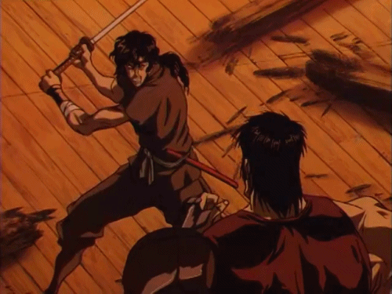

MANGA 漫画
le style manga est un style qu'aujourd'hui on ne présente plus , il est reconnaissable entre mille des grands yeux , des cheveux aux couleurs extravagantes
mais à vrai dire rester cantonné sur ce point de vue est pour moi une erreur . celui ci a en effet beaucoup évolué au fil des années passant d'un style plutôt réaliste propre
au mouvement gekiga (année 60-70) à une forme plus cartoonesque et plus arrondi vers les années 2000 qui ne serait oublier le style d'osamu tezuka au balbutiement de la japanimation. Ce que je veux dire est qu'il ne faut pas avoir appriori
ne pas rester cantonner à une vision de ce style car les temps changent . Il existe autant de style unique découlant du style "manga" basique qu'il n'existe d'artiste
alors pratiquer et faites de vous un artiste et un animateur avec son propre style et sa propre patte graphique . Bien sûr pour s'améliorer il faudra s'inspirer des travaux d'autres animateurs
mais il ne faut pas tomber dans le bête copier coller , affirmez votre style et ce n'est que comme ça que vous vous démarquerez. C'est par votre différence et votre personnalité que vous avancerez
alors n'abandonnez pas et perséverez !!!

retour à la page initiale